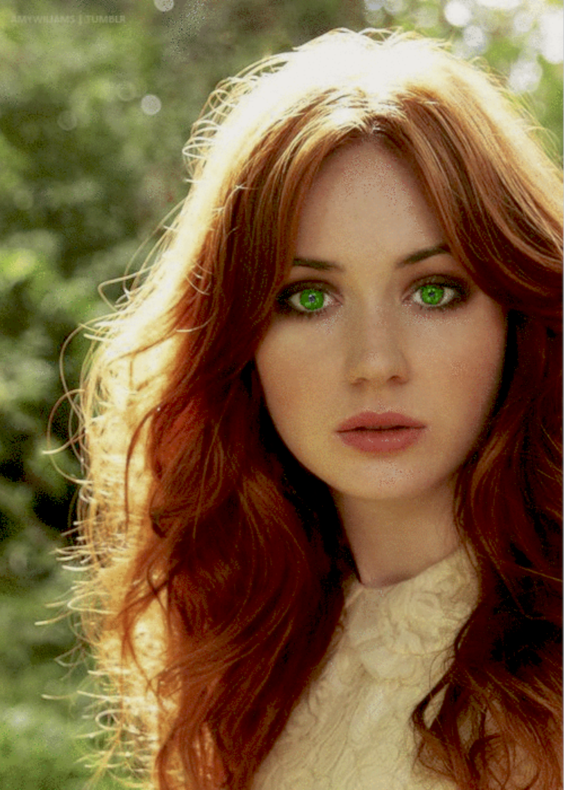

Lily Luna PotterAbout:1. Lily Luna Potter was born to Harry James Potter and Ginevra Molly Weasley in June 10 2008. 2. Her siblings are James Sirius Potter and Albus Severus Potter. 3. She was sorted into Gryffindor house when he first went to Hogwarts School of Witchcraft and Wizardry in 2019, at the age of 11. 4. Her godparents, as well as her uncle and aunt are Rolf Goldstien Scamander and Luna Pandora Lovegood. 5. She is a Half blood witch. 6. She was appointed as Prefect in her 5th year, later was appointed Quidditch Captain for Gryffindor in her 6th year and finally was appointed as the Head Girl in her 7th year. Characteristics: 1. Charming 2. Brave 3. Smart Possesions: 1. Marauder's Map (In her 6th and 7th year) 2. Invisiblity Cloak (In her 6th and 7th year) 3. A 11 ½", Rose Wood, Phoenix Feather Core Wand 4. Nimbus 2020(broomstick) Other Details: Eye Colour - Emerald Green Hair Colour - Dark Velvet Red hair with vermillion tips Height - 137cm (1st year) Height - 178cm (7th year) Species - Human Gender - Female Patronus - Tigress Boggart - Losing Hugo, Losing Lysander (Later) Quidditch Position - Chaser for Gryffindor (2nd year to 5th year), Seeker for Gryffindor (6th and 7th year) Favourite Colour - Turquoise (Blue) Nickname - Lils Speciality - Potions (All Kinds) Later Life: Married To: Lysander Alexander Scamander Kids - Lyra Luna Melody Laura Louisa May Scamander (March 21, 2032), Natasha Rose Wanda Hermione Ariana Victoire Scamander (March 21, 2032), Newton Stephen Parker Lysander Jasper Xavier Scamander (March 21, 2032), Jonathan Lawrence Anthony Scorpius Pietro Alexander Scamander (April 7, 2034)(Metamorphmagus), Harry James Albus Charles Scott Loki Scamander (January 5, 2036) Professions - Auror, Head of Auror Office, Head of the Law-enforcement Department, Deputy Minster of Magic, Minister of Magic Notable Achievements - Order of Merlin 1st Class (Cure for Werewolves) |
 |